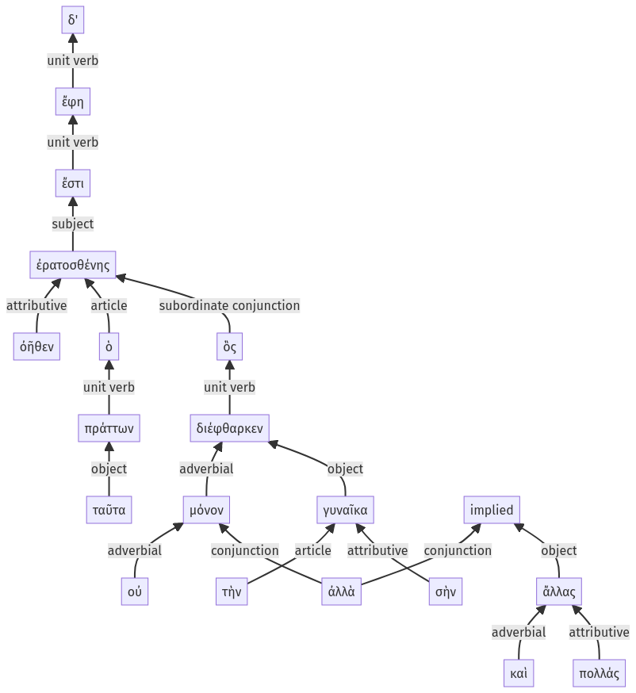

Lysias, 1.16.32-1.16.50a
1.16.16-1.16.31a | 1.16.51-1.16.55a
Sentence 41
1.16.32-1.16.50a
ἔστι δ' "ἔφη "ἐρατοσθένης ὀῆθεν ὁ ταῦτα πράττων, ὃς οὐ μόνον τὴν σὴν γυναῖκα διέφθαρκεν ἀλλὰ καὶ ἄλλας πολλάς:
2 ἔστι
1 ἔφη
2 ἐρατοσθένης ὀῆθεν
3 ὁ ταῦτα πράττων
3 ὃς οὐ μόνον τὴν σὴν γυναῖκα διέφθαρκεν
3 ἀλλὰ καὶ ἄλλας πολλάς
ἔστι δ' "ἔφη "ἐρατοσθένης ὀῆθεν ὁ ταῦτα πράττων, ὃς οὐ μόνον τὴν σὴν γυναῖκα διέφθαρκεν ἀλλὰ καὶ ἄλλας πολλάς:
Highlighting:
- connecting words
- unit verb
- subject
- object
Color code:
- Independent clause (level 1, transitive verb)
- quote (level 2, linking verb)
- attributive participle (level 3, transitive verb)
- subordinate clause (level 3, transitive verb)
- subordinate clause (level 3, transitive verb)
